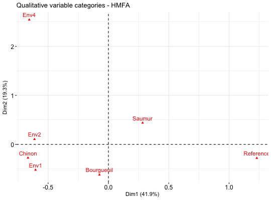
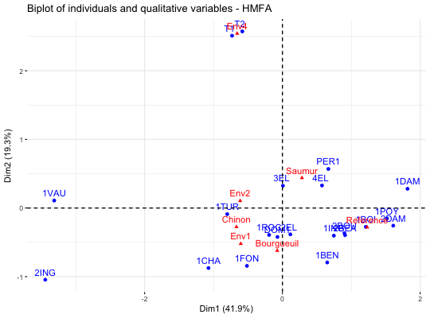
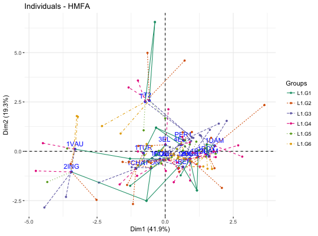

Visualize Hierarchical Multiple Factor Analysis
Hierarchical Multiple Factor Analysis (HMFA) is, an extension of MFA, used in a situation where the data are organized into a hierarchical structure. fviz_hmfa() provides ggplot2-based elegant visualization of HMFA outputs from the R function: HMFA [FactoMineR].
- fviz_hmfa_ind(): Graph of individuals
- fviz_hmfa_var(): Graph of variables
- fviz_hmfa_quali_biplot(): Biplot of individuals and qualitative variables
- fviz_hmfa(): An alias of fviz_hmfa_ind()
fviz_hmfa_ind(X, axes = c(1, 2), geom = c("point", "text"), repel = FALSE, habillage = "none", addEllipses = FALSE, shape.ind = 19, col.ind = "blue", col.ind.sup = "darkblue", alpha.ind = 1, select.ind = list(name = NULL, cos2 = NULL, contrib = NULL), partial = NULL, col.partial = "group", group.names = NULL, node.level = 1, ...) fviz_hmfa_var(X, choice = c("quanti.var", "quali.var", "group"), axes = c(1, 2), geom = c("point", "text"), repel = FALSE, col.var = "red", alpha.var = 1, shape.var = 17, col.var.sup = "darkgreen", select.var = list(name = NULL, cos2 = NULL, contrib = NULL), ...) fviz_hmfa_quali_biplot(X, axes = c(1, 2), geom = c("point", "text"), repel = FALSE, habillage = "none", title = "Biplot of individuals and qualitative variables - HMFA", ...) fviz_hmfa(X, ...)
Arguments
- X
- an object of class HMFA [FactoMineR].
- axes
- a numeric vector of length 2 specifying the dimensions to be plotted.
- geom
- a text specifying the geometry to be used for the graph. Allowed
values are the combination of
c("point", "arrow", "text"). Use"point"(to show only points);"text"to show only labels;c("point", "text")orc("arrow", "text")to show arrows and texts. Usingc("arrow", "text")is sensible only for the graph of variables. - repel
- a boolean, whether to use ggrepel to avoid overplotting text labels or not.
- habillage
- an optional factor variable for coloring the observations by groups. Default value is "none". If X is an HMFA object from FactoMineR package, habillage can also specify the index of the factor variable in the data.
- addEllipses
- logical value. If TRUE, draws ellipses around the individuals when habillage != "none".
- shape.ind, shape.var
- point shapes of individuals and variables, respectively.
- col.ind, col.var
- color for individuals, partial individuals and variables, respectively. Can be a continuous variable or a factor variable. Possible values include also : "cos2", "contrib", "coord", "x" or "y". In this case, the colors for individuals/variables are automatically controlled by their qualities ("cos2"), contributions ("contrib"), coordinates (x^2 + y^2 , "coord"), x values("x") or y values("y"). To use automatic coloring (by cos2, contrib, ....), make sure that habillage ="none".
- col.ind.sup
- color for supplementary individuals
- alpha.ind, alpha.var
- controls the transparency of individual, partial individual and variable, respectively. The value can variate from 0 (total transparency) to 1 (no transparency). Default value is 1. Possible values include also : "cos2", "contrib", "coord", "x" or "y". In this case, the transparency for individual/variable colors are automatically controlled by their qualities ("cos2"), contributions ("contrib"), coordinates (x^2 + y^2 , "coord"), x values("x") or y values("y"). To use this, make sure that habillage ="none".
- select.ind, select.var
- a selection of individuals and variables to be
drawn. Allowed values are NULL or a list containing the arguments name, cos2
or contrib:
- name is a character vector containing individuals/variables to be drawn
- cos2 if cos2 is in [0, 1], ex: 0.6, then individuals/variables with a cos2 > 0.6 are drawn. if cos2 > 1, ex: 5, then the top 5 individuals/variables with the highest cos2 are drawn.
- contrib if contrib > 1, ex: 5, then the top 5 individuals/variables with the highest cos2 are drawn
- partial
- list of the individuals for which the partial points should be drawn. (by default, partial = NULL and no partial points are drawn). Use partial = "All" to visualize partial points for all individuals.
- col.partial
- color for partial individuals. By default, points are colored according to the groups.
- group.names
- a vector containing the name of the groups (by default, NULL and the group are named group.1, group.2 and so on).
- node.level
- a single number indicating the HMFA node level to plot.
- ...
- Arguments to be passed to the function fviz() and ggpubr::ggpar()
- choice
- the graph to plot. Allowed values include one of c("quanti.var", "quali.var", "group") for plotting quantitative variables, qualitative variables and group of variables, respectively.
- col.var.sup
- color for supplementary variables.
- title
- the title of the graph
Value
a ggplot
References
http://www.sthda.com/english/
Examples
# Hierarchical Multiple Factor Analysis # ++++++++++++++++++++++++ # Install and load FactoMineR to compute MFA # install.packages("FactoMineR") library("FactoMineR") data(wine) hierar <- list(c(2,5,3,10,9,2), c(4,2)) res.hmfa <- HMFA(wine, H = hierar, type=c("n",rep("s",5)), graph = FALSE) # Graph of individuals # ++++++++++++++++++++ # Color of individuals: col.ind = "#2E9FDF" # Use repel = TRUE to avoid overplotting (slow if many points) fviz_hmfa_ind(res.hmfa, repel = TRUE, col.ind = "#2E9FDF")# Color individuals by groups, add concentration ellipses # Remove labels: label = "none". # Change color palette to "jco". See ?ggpubr::ggpar grp <- as.factor(wine[,1]) p <- fviz_hmfa_ind(res.hmfa, label="none", habillage=grp, addEllipses=TRUE, palette = "jco") print(p)# Graph of variables # ++++++++++++++++++++++++++++++++++++++++ # Quantitative variables fviz_hmfa_var(res.hmfa, "quanti.var")# Graph of categorical variable categories fviz_hmfa_var(res.hmfa, "quali.var")# Groups of variables (correlation square) fviz_hmfa_var(res.hmfa, "group")# Biplot of categorical variable categories and individuals # +++++++++++++++++++++++++++++++++++++++++++++++++++++++++ fviz_hmfa_quali_biplot(res.hmfa)# Graph of partial individuals (starplot) # +++++++++++++++++++++++++++++++++++++++ fviz_hmfa_ind(res.hmfa, partial = "all", palette = "Dark2")